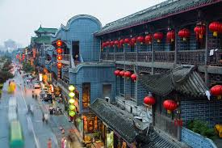

Beijing is the capital of the China,located in northern China.As a city combining both modern and traditional architecture,Beijing is a megacity rich in history,exemplified in its global influence in politics,economy,education,history,culture,and technology.Beijing is the second largest Chinese city by urban population and is the nation's political,cultural,and educational center.


Guangzhou is the capital and most populous city of the province of Guangdong in southern China.Guangzhou as a major port and transportation hub today, as well as one of China's three largest cities.Guangzhou is situated at the heart of the most-populous built-up metropolitan area in mainland China, is one of China's five National Central Cities.
Luoyang is a city located in the confluence area of Luo River and Yellow River in Central China.Situated on the central plain of China, Luoyang is one of the cradles of Chinese civilization, and is one of the Four Great Ancient Capitals of China.

Chengdu is the capital of China's Sichuan province. It is one of the three most populous cities in Western China. It is now one of the most important economic, financial, commercial, cultural, transportation, and communication centers in Western China.

